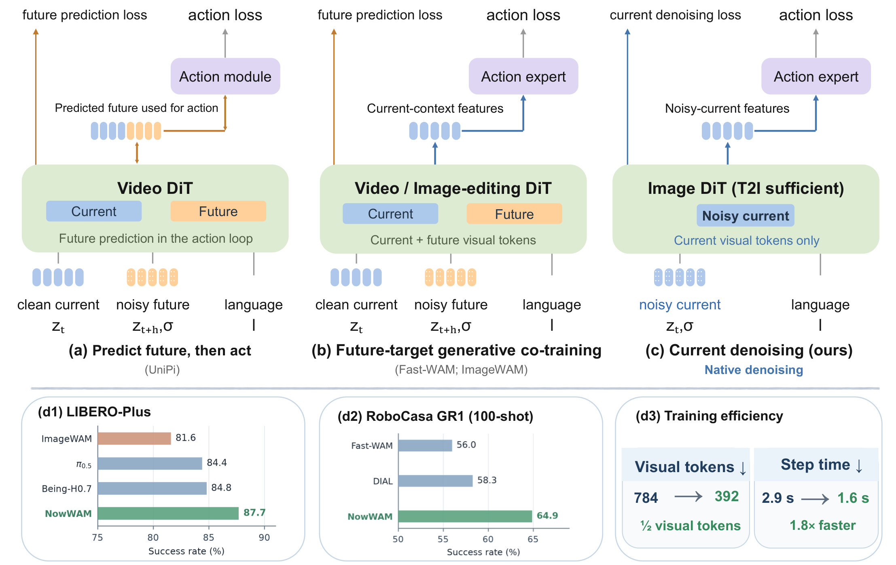
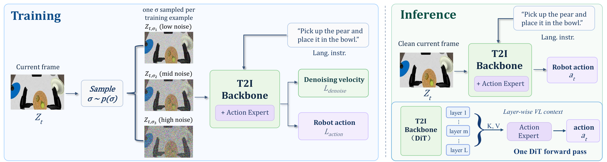

Current, not future
The current visual latent is the generative target and the context used by the action expert.
Generative robot control, simplified
Denoising as Generative Adaptation
for Robot Control
What if the value of generative pretraining for control lies not in predicting the future, but in the denoising trajectory itself?

Does generative co-training help because it predicts what comes next—or because it keeps generative learning coupled to action learning?
Our controlled comparison shows that past and future targets perform comparably. The native denoising trajectory, not forward temporal semantics alone, is the effective interface.
02 / Method
One visual stream supports both current-frame denoising and action learning. At deployment, the policy reads the clean current observation with no visual rollout.

The current visual latent is the generative target and the context used by the action expert.
Training samples the action-facing representation across the pretrained DiT trajectory.
Inference evaluates the same representation at σ = 0, without an auxiliary visual stream.
03 / What we learn
Rather than reproducing the full experiment table, we isolate the evidence that answers the paper’s central question.
Temporal direction
Forward prediction is not uniquely privileged: a past target performs on par with future targets.
Adaptation interface
Training across denoising states is substantially stronger than adapting only at the clean endpoint.
Generative backbone
Strong control adaptation does not require a video-generative or image-editing backbone.
LIBERO-Plus87.7%
RoboCasa · 100-shot64.9%
Visual tokens784 → 392
Training step1.8× faster
Citation
@article{wang2026nowwam,
title = {Beyond Future Prediction: Denoising as Generative Adaptation for Robot Control},
author = {Wang, Zanyi and Lei, Yuheng and Jiang, Dengyang and Luo, Ping and Wang, Mengdi and Liang, Zhixuan and Liu, Shilong},
journal = {arXiv preprint},
year = {2026}
}